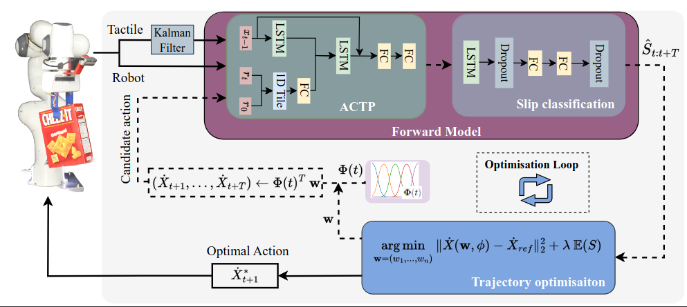

Abstract
Ensuring a stable grasp during manipulative movements is crucial for robotic applications. While grip force has been the primary means of slip control, our human study revealed that trajectory modulation is also an effective slip control policy during pick-and-place tasks. Motivated by these findings, we developed and compared a slip control policy based on trajectory modulation to one based on grip force control for robotic pick-and-place tasks. Our results show that trajectory modulation significantly outperforms grip force control in certain scenarios, highlighting its potential for slip control in robotics. Moreover, we demonstrate the importance of incorporating forward models in developing effective trajectory modulation slip control systems. Overall, our study provides insight into an alternative method for slip control and suggests that predictive control using a forward model offers a promising approach for improving robotic manipulation tasks, in particular for slip control using trajectory modulation.
The video below provides an in-depth look into the practical applications of our novel slip controller, showcasing its performance in real-world scenarios. We have included demonstrations that highlight the controller’s ability to maintain stability and control under varying conditions, which are critical for its intended use in dynamic environments. Additionally, the video presents key findings from our human subject study, where participants interacted with the system under controlled conditions. This study not only validates the effectiveness of our slip controller but also offers insights into its potential impact on enhancing human-robot interaction. Through these demonstrations, we aim to illustrate the robustness and versatility of our approach, paving the way for future advancements in this field.
In our human study, we aimed to test the hypothesis that "Humans always use grip force to control slip" by analyzing participants' hand accelerations and grip forces during a pick-and-place task. We designed two scenarios: Baseline Tests (B-Tests), where participants focused on task completion within a time constraint, and Controlled Tests (C-Tests), where they also minimized object rotation, thereby relying more on tactile feedback to control slips. The results from sixteen participants demonstrated a consistent use of hand acceleration modulation to meet the task objectives, supporting our hypothesis. These findings informed the development of our novel robotic slip control method, which optimizes the robot's trajectory by incorporating a tactile forward model, marking a significant step forward in robotic manipulation.
In our robotic experimentation, we employed a Franka Emika arm to validate the effectiveness of our novel 6-D Proactive Control approach for trajectory modulation in slip avoidance. This control strategy leverages a predictive tactile forward model to adjust the reference trajectory and minimize slip occurrences. Through a series of experiments, we compared the performance of reactive and proactive control across various objects, trajectory classes, and manipulation tasks where slip could lead to task failure. Our findings indicate that trajectory modulation, guided by proactive control, significantly enhances slip control, especially in scenarios where traditional grip force control is either impractical or ineffective. Furthermore, the Proactive Controller demonstrated strong generalization capabilities, effectively adapting to unseen object classes, new robot trajectories, and varied motion start and end poses, thus confirming its robustness in diverse robotic manipulation tasks.
To access the datasets from our study, please use the following links: